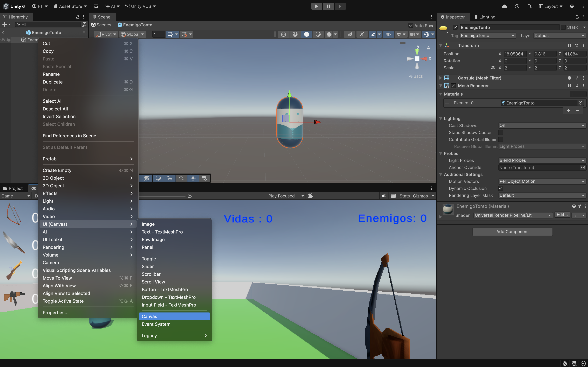
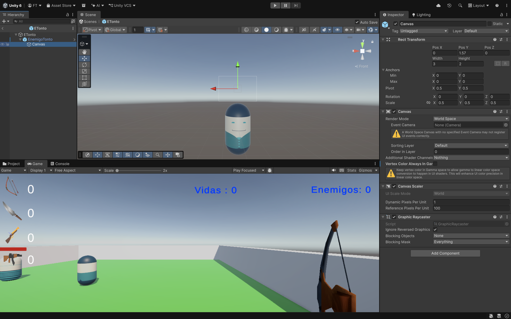
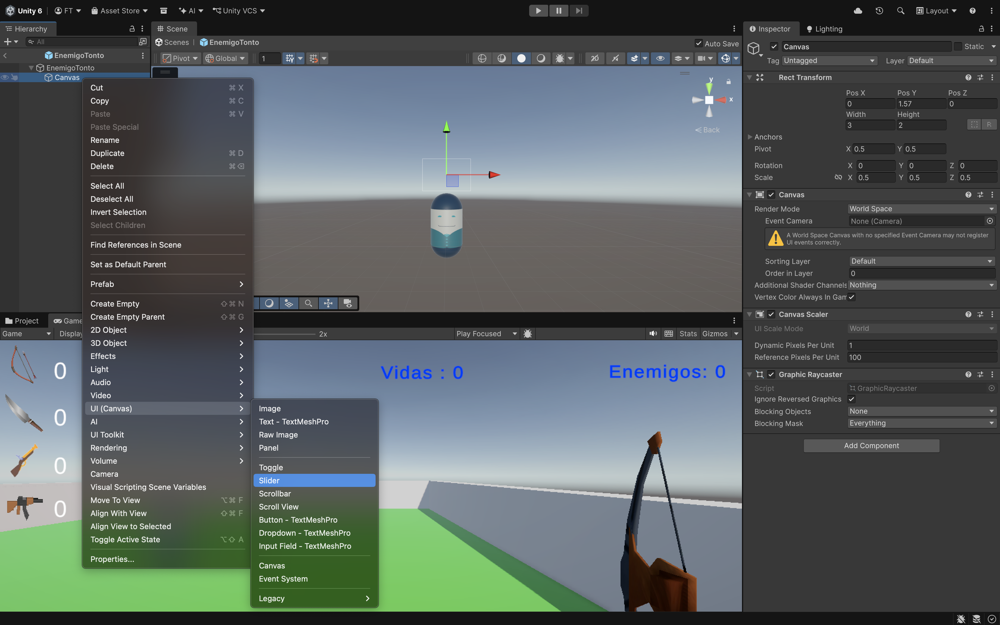
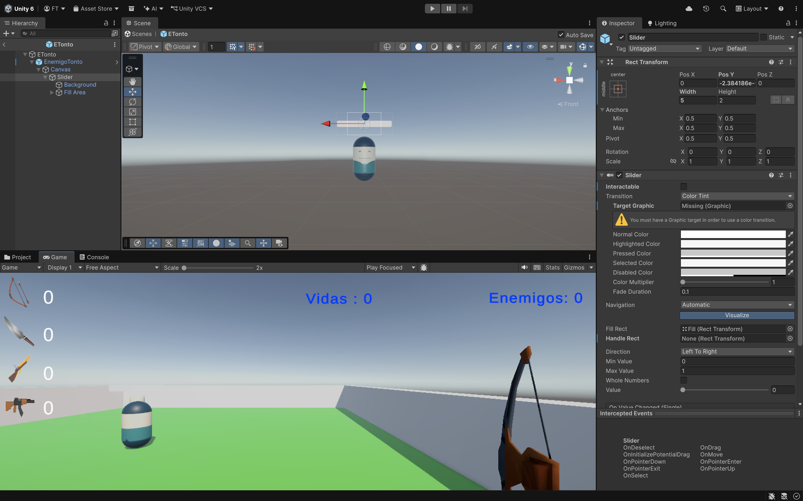
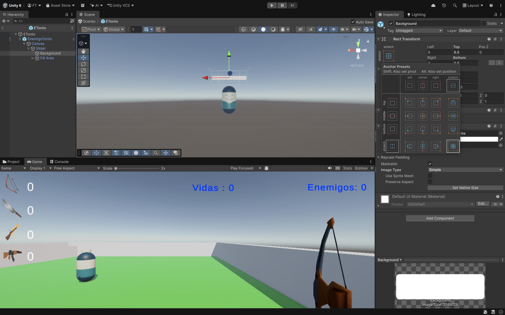
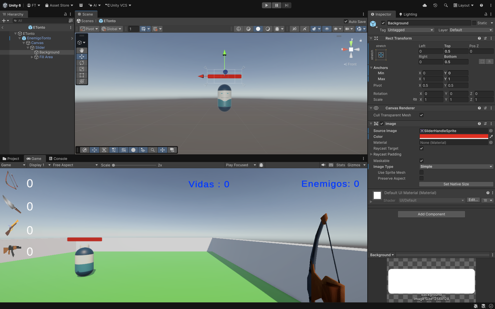
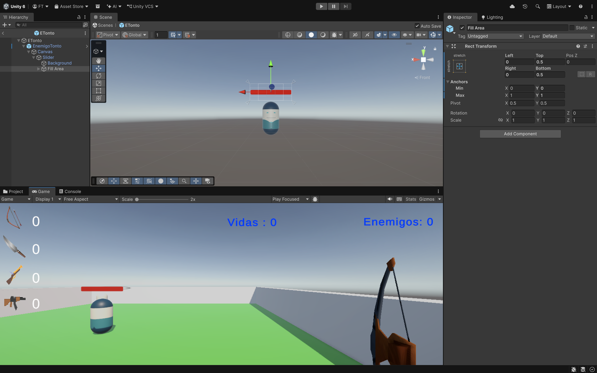
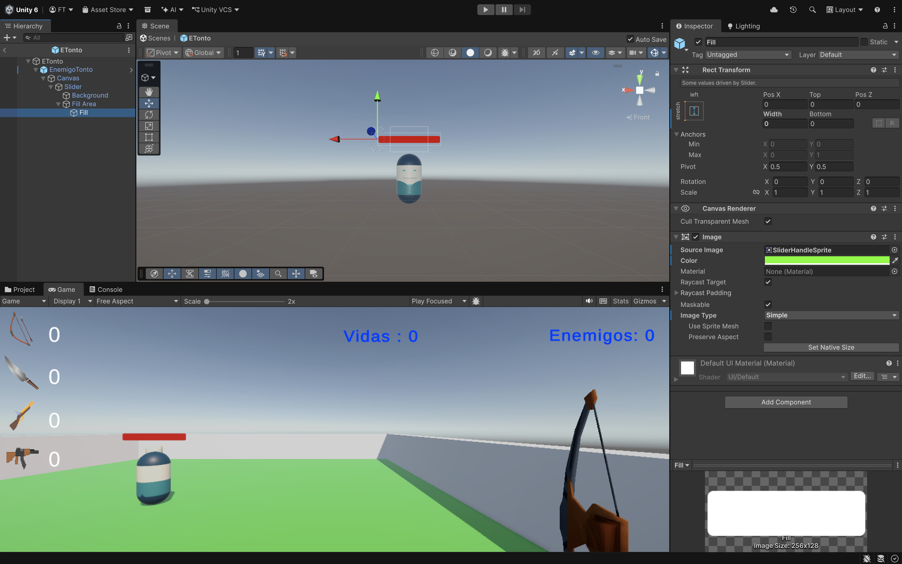

Los Enemigos Listos y Tontos tendrán un Slider para las vidas. Para ello tendremos que modificar los Prefabs de EListo y ETonto. Empezaremos con el ETonto.
Abrir su Prefab y añadir un Canvas:
- Seleccionando EnemigoTonto con click dcho.

- En Render Mode los ponemos a "World Space" para poder modificar la posición......
- Hay que poner el Canvas encima del Enemigo. Y ajustamos la posición y tamaño.
- Event Camera indica una Camera para proyectar rayos (raycasts) y detectar interacciones del usuario (clics, toques, hover) sobre los elementos de la interfaz , pero nosotros no necesitamos ninguna.

Dentro del Canvas añadir un Slider:
- Seleccionando Canvas con click dcho y dentro el Slider.

- Ajustamos la posición y tamaño del Slider.
- Interactable desactivado para que el jugador no pueda arrastrar o hacer clic en la barra con el ratón, teclado o pantalla táctil.
- Target Graphic a None.
- El Componente Handle Slide Area se elimina ya que es el botón deslizable.

Se puede ver el botón de slider pero no preocuparse luego se quitará. Si no quereis que se vea se puede poner el Value del Slider a 1.
- Objeto Slider/BackGround:
- Rect Tranform seleccionar las 4 direcciones con SHIFT + ALT (pivote y posición).

- Componente Image:
- Source Image: SliderHandleSprite.
- Cambiamos en Image el Color a rojo.

- Objeto Slider/Fill Area:
- Ajustamos su posición.
- Rect Tranform seleccionar las 4 direcciones con SHIFT + ALT (pivote y posición).

- Objeto Slider/Fill Area/Fill:
- Inicializar sus posiciones.
- Source Image: SliderHandleSprite.
- Imagen lo cambiamos a el color verde.

Si queremos que el Slider sea más ancho ó más fino modificar el Top y Bottom del BackGround y Fill.
Si arrastramos del Slider el Value vemos que aparece por debajo el color verde. Esto es lo que tenemos que modificar en el Script.
Hacer los mismos pasos para el EListo.